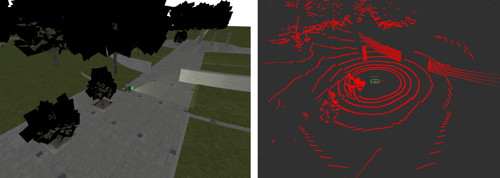
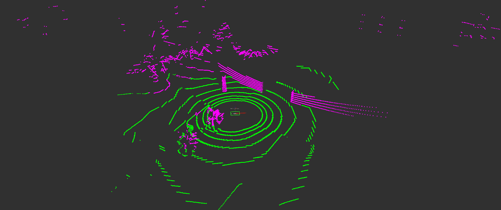
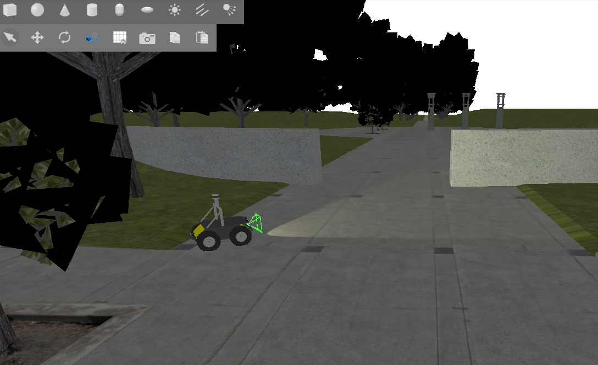
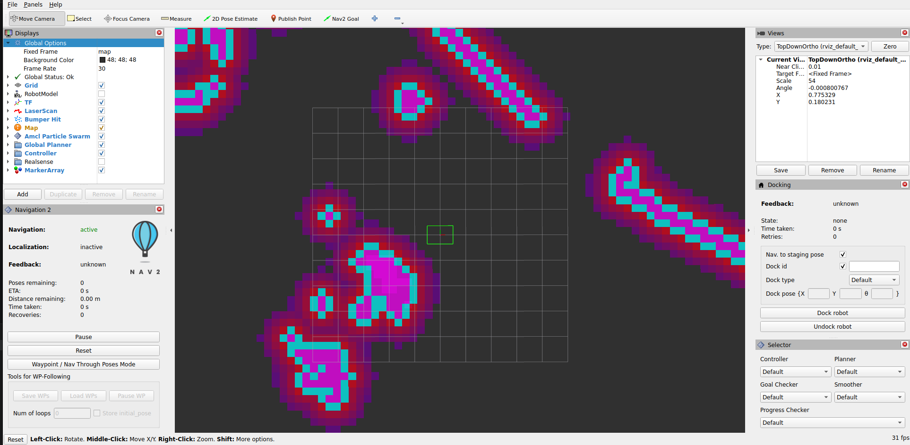
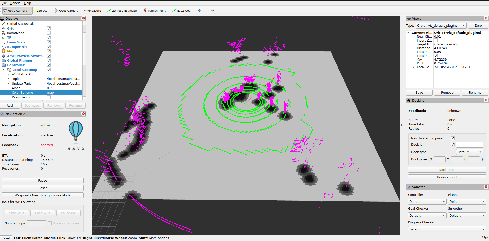

Ground Terrain Segmentation using 3D Lidar
Overview
In this tutorial, we demonstrate a terrain-aware costmap layer for Nav2 which uses 3D lidar ground segmentation. The ground consistency costmap layer allows users to classify terrain into traversable ground and obstacles for intelligent outdoor navigation in non-planar environments, creating smarter and safer costmaps.

Ground Consistency Layer in action: Green points are ground, magenta points are obstacles overlaid on the costmap
Requirements
This tutorial requires ROS 2 Jazzy and Nav2. If you don’t have Nav2 already installed, check out our Getting Started page before moving forward.
Installation Steps
This tutorial uses vcstool to manage repository dependencies. Install it using apt:
sudo apt-get install python3-vcstool
Setup Tutorial Package and Dependencies
Create and prepare a workspace:
# Create workspace
mkdir -p ~/nav2_ws/src
cd ~/nav2_ws/src
# Clone navigation2_tutorials repository
git clone -b jazzy https://github.com/ros-navigation/navigation2_tutorials.git
Now, install all dependencies (including ground segmentation, KISS-ICP odometry, and the ground consistency costmap plugin):
cd ~/nav2_ws
# Import all demo dependencies from the .repos file
vcs import src < src/navigation2_tutorials/nav2_lidar_ground_segmentation_demo/dependencies.repos
# Install ROS package dependencies
source /opt/ros/jazzy/setup.bash
rosdep install --from-paths src --ignore-src --rosdistro jazzy -y
Build the Demo
Build the tutorial package and all its dependencies:
cd ~/nav2_ws
source /opt/ros/jazzy/setup.bash
colcon build --symlink-install --packages-up-to nav2_lidar_ground_segmentation_demo --cmake-args -DCMAKE_BUILD_TYPE=RELEASE
source install/setup.bash
Ground Segmentation Overview
Ground segmentation in point cloud data is the process of separating ground points from obstacle points when not operating on trivial, planar terrain. This task is fundamental for perception in mobile robotics, where safety and reliable operation depend on the precise detection of obstacles and navigable surfaces. A single LiDAR scan can contain over a million points, capturing both ground and obstacle surfaces within the region of interest. However, not all points are equally relevant for downstream perception tasks. Accurate ground segmentation is essential for reliable perception, traversability analysis, navigation, and map generation in autonomous systems. By effectively distinguishing between ground and obstacle points, we can create more accurate costmaps that allow the robot to navigate safely and efficiently in complex environments.
Benefits of Ground Segmentation:
Enhanced traversability analysis: Accurately identifies traversable terrain for safe navigation planning
Better obstacle detection: Focuses processing on actual obstacles rather than terrain variations
Robust slope handling: Distinguishes between navigable slopes and actual blocking obstacles
Improved computational efficiency: Filters irrelevant points before processing, reducing memory and CPU usage
Underground/tunnel navigation: Enables navigation in challenging environments where traditional costmaps fail

Raw Input Point Cloud

Segmented Ground (Green) and Obstacle Points (Magenta) based on GSeg3D
While ground segmentation is traditionally used to filter out ground points from costmaps, we can instead use ground points in our decision-making process to implement an evidence accumulation and height-based classification system. This approach creates more accurate and stable costmaps in outdoor challenging environments.
Ground Consistency Layer
Ground Consistency is a costmap layer that leverages ground segmentation to create more reliable occupancy estimates for navigation in challenging outdoor environments. While it can be used with any ground segmentation algorithm, we recommend using GSeg3D for which this plugin was originally developed to integrate with.
Key Features:
Evidence-Based Probabilistic Approach: Maintains accumulated evidence of ground and obstacle points across multiple sensor observations, rather than making binary decisions on individual measurements
Evidence Competition: Ground and obstacle points compete to determine the true occupancy status of each costmap cell, reducing false positives and false negatives
Height-Based Classification: Distinguishes between actual obstacles and terrain variations (e.g., slopes, small bumps) by evaluating obstacle height relative to local ground level
Temporal Stability: Evidence accumulates and decays over time, creating smooth transitions between free and occupied states while maintaining responsiveness to environmental changes
Noise Resilience: Protects against isolated sensor noise by requiring sustained evidence before marking a cell as occupied
Configuration and Tuning
We will now configure Nav2 to use the ground consistency layer in its local costmap. It is recommended to use the layer in the local costmap since it relies on real-time sensor data and is designed for short-term occupancy estimation. For safety, use the layer together with the inflation layer to create a buffer around detected obstacles.
Here is an example configuration for the local costmap:
local_costmap:
local_costmap:
ros__parameters:
# ... other costmap settings ...
plugins: ["ground_consistency", "inflation_layer"]
ground_consistency:
plugin: "nav2_ground_consistency_costmap_plugin::GroundConsistencyLayer"
ground_points_topic: /ground_segmentation/ground_points
nonground_points_topic: /ground_segmentation/obstacle_points
tf_timeout: 0.1
min_clearance: 0.1
robot_height: 0.92
maximum_height_filter: 2.0
ground_inc: 1.0
nonground_inc: 1.5
nonground_decay: 0.93
ground_decay: 0.80
max_score: 5000.0
nonground_occ_thresh: 6.0
nonground_prob_thresh: 0.75
enable_kpi_logging: false
discretize_costs: true
max_data_range: 50.0
ground_neighbor_search_cells: 0
inflation_layer:
plugin: "nav2_costmap_2d::InflationLayer"
cost_scaling_factor: 3.0
inflation_radius: 0.7
The layer’s behavior depends on your specific use case (terrain type, robot size, sensor characteristics). Here are the key parameters and how to tune them:
- Robot Height (
robot_height) Set to your robot’s actual height
The layer uses this to classify obstacles as blocking or non-blocking based on their height relative to the ground.
Example: Husky robot = 0.92m
- Evidence Accumulation (
ground_inc,nonground_inc) Higher increments = faster response to observations
Keep
nonground_inc > ground_incbecause we want nonground evidence to accumulate faster than ground evidence. This creates a bias towards safety.Typical ratio: 1.0 ground, 1.5 nonground
- Evidence Decay (
ground_decay,nonground_decay) Ground decay (lower value): We decay ground evidence faster to allow the costmap to adapt quickly to changes in terrain (e.g., moving onto a slope). Use 0.80-0.85 for responsive terrain adaptation.
Nonground decay (higher value): We want obstacles to persist longer to prevent flickering due to sensor noise. Use 0.90-0.95 for stable obstacle marking.
Difference creates temporal hysteresis: obstacles are believed longer than ground evidence.
- Height Filtering (
min_clearance,maximum_height_filter) min_clearance: Minimum bump your robot can detect. Too low = sensitive to noise; too high = misses small obstacles.maximum_height_filter: Overhead canopy/ceiling height. Objects above this are ignored.At times, ground segmentation may classify ground points as obstacle (e.g., due to sensor noise or very uneven terrain). Setting a reasonable
min_clearancecan prevent these misclassifications from blocking navigation.
- Neighbor Search (
ground_neighbor_search_cells) 0 = Use only ground points in current cell for height estimation
1-3 = Average ground height from neighboring cells (more stable but slower response)
Use on very uneven terrain where cells might lack ground points or when low resolution lidar data causes sparse ground points.
- Decision Thresholds (
nonground_occ_thresh,nonground_prob_thresh) These two thresholds work together in a two-stage filter:
nonground_occ_thresh: Minimum score (accumulated evidence) required. With defaultnonground_inc: 1.5, a value of 6.0 means you need ~4 obstacle point observations before considering a cell for LETHAL marking. This is the primary defense against stray sensor noise.nonground_prob_thresh: Probability confidence required (after score passes). Even with enough accumulated evidence, the observations must agree with high confidence (default 75%) to actually mark as LETHAL.
Why both? Alone,
nonground_prob_threshwould fire on a single high-confidence false positive point. Together, they require both: sustained evidence (multiple observations) and high agreement (high confidence). This combination prevents isolated false positives from blocking navigation.For aggressive navigation (narrow spaces): Decrease
nonground_occ_threshto 4-5, increasenonground_prob_threshto 0.85 (requires stronger evidence per point)For conservative navigation (safety-critical): Increase
nonground_occ_threshto 8-10, decreasenonground_prob_threshto 0.5 (generous with evidence accumulation)
External Parameters
Ground Segmentation Parameters - You may also need to tune ground segmentation algorithm parameters for your robot (e.g., slope threshold, sensor distance to ground) to ensure proper classification of ground and obstacle points, as this directly affects the layer’s performance. Refer to the GSeg3D parameters documentation.
For a complete and exhaustive reference of all available parameters, consult the plugin documentation.
Use Cases
Use Case |
Challenge |
Solution |
|---|---|---|
Uneven Terrain & Slopes |
Standard costmaps mark slopes and elevation changes as obstacles, blocking navigation on traversable terrain |
Ground Consistency uses terrain-relative heights, distinguishing navigable slopes from actual blocking obstacles. Lower decay values allow quick response to terrain changes. |
Navigation Under Structures |
Overhead structures (bridges, tree canopies) are incorrectly marked as blocking |
Set |
Cluttered Environments |
Branches, leaves, and small debris create false positive obstacles |
Use |
Dynamic Environments |
Sensor noise causes flickering costmaps with frequent occupation/free state changes |
Evidence accumulation and decay smooth the costmap over time, creating temporal stability |
Let’s look at some real-world examples of the ground consistency layer in action:
Demonstration of ground consistency layer with Arter Excavator at the Robotics Innovation Center (DFKI) in Bremen, Germany:

Demonstration in BotanicGarden dataset:

Demonstration in CitrusFarm dataset:

Practical Example: Running the Demo
Now that everything is installed and built, let’s run the practical example demonstrating the Ground Consistency layer in action.
Launch the Simulation
For this tutorial, we will use the Baylands outdoor world in Gazebo with a Husky robot.
Start the complete simulation:
ros2 launch nav2_lidar_ground_segmentation_demo lidar_ground_segmentation_demo.launch.py 2>&1 | grep -v "SampleConsensus"
Note: The grep -v "SampleConsensus" is used to filter out expected warnings from the ground segmentation algorithm that do not affect the demo. You can omit it if you want to see all output.
You should see Gazebo launch with Husky in the Baylands world:
{kind=link}

Observe Ground Consistency Layer in Action
An RViz2 window will also open showing the costmap layers.
Visualizing Ground Segmentation Points (Optional)
Add the following PointCloud2 topics to your RViz2 display to visualize ground and obstacle classification:
/ground_segmentation/ground_points/ground_segmentation/obstacle_points
Important: Set RViz2 target frame rate to ~8 Hz to match the LiDAR sensor publish rate from Gazebo. If set higher, point clouds will display intermittently.
You should now see the ground points and obstacle points from the segmentation algorithm overlaid on the costmap with the ground consistency layer applied:
{kind=link}

Testing Navigation
Use the Nav2 Goal tool in RViz2 to set navigation goals for the robot. Try setting goals in different areas of the map, such as on slopes, under the tree canopies, and through the uneven terrain. Observe how the ground consistency
layer allows the robot to navigate through these challenging terrains by correctly classifying obstacles and traversable ground:
{kind=link}

Conclusion
The Ground Consistency costmap layer enables terrain-aware navigation by:
Understanding terrain geometry - Distinguishes traversable slopes from blocking obstacles
Height-aware filtering - Marks only obstacles that actually block the robot
Temporal smoothing - Uses evidence accumulation to create stable, responsive costmaps
Flexible integration - Works with any ground segmentation algorithm
You can integrate the layer into any Nav2-based robot by:
Installing the plugin
Providing ground/obstacle point clouds (from your choice of sensor/algorithm)
Configuring the parameters for your robot dimensions and terrain
Adding it to your costmap configuration
The layer’s behavior is highly tunable, so start with the provided defaults, then adjust based on your specific terrain and robot characteristics.
Extended Topics
Troubleshooting
- Layer not being used in costmap
Verify the plugin is installed:
ros2 pkg list | grep ground_consistencyCheck that the layer name matches in your configuration (
ground_consistency)Ensure the plugin name is fully qualified:
nav2_ground_consistency_costmap_plugin::GroundConsistencyLayer
- No cells marked as obstacles
Verify ground and obstacle point topics are being published
Check that point cloud data is arriving:
ros2 topic hz /ground_segmentation/obstacle_pointsIf no points arrive, the segmentation algorithm may not be running or publishing to wrong topics
Verify
nonground_occ_threshisn’t too high
- Costmap too conservative (marks too many obstacles)
Decrease
nonground_inc(evidence accumulates slower)Increase
ground_decay(ground evidence fades faster)Increase
nonground_occ_thresh(higher evidence needed to mark as occupied)Verify
robot_heightis correct
- Costmap too aggressive (misses obstacles)
Increase
nonground_inc(evidence accumulates faster)Decrease
nonground_decay(obstacles persist longer)Decrease
nonground_occ_thresh(lower evidence to mark as occupied)Verify point cloud data quality from segmentation algorithm
- Overhead structures blocking navigation
Increase
maximum_height_filterto the height of your structuresVerify that overhead points are actually coming through in the point cloud
Check that
robot_heightis correctly set
- Performance Issues
Reduce
max_data_rangeif using only nearby pointsDisable
enable_kpi_loggingin productionVerify that
ground_neighbor_search_cellsis set appropriately (0 is fastest)
Funding
This work was partially funded by VaMEx3-APO (German Federal Ministry of Research, Technology and Space (BMFTR) / German Aerospace Center (DLR), grant 50RK2252C) and ROBDEKON2 (German Federal Ministry of Research, Technology and Space (BMFTR), grant 13N16537). Development of the presented codebase was supported by both projects at the German Research Center for Artificial Intelligence (DFKI), Robotics Innovation Center.